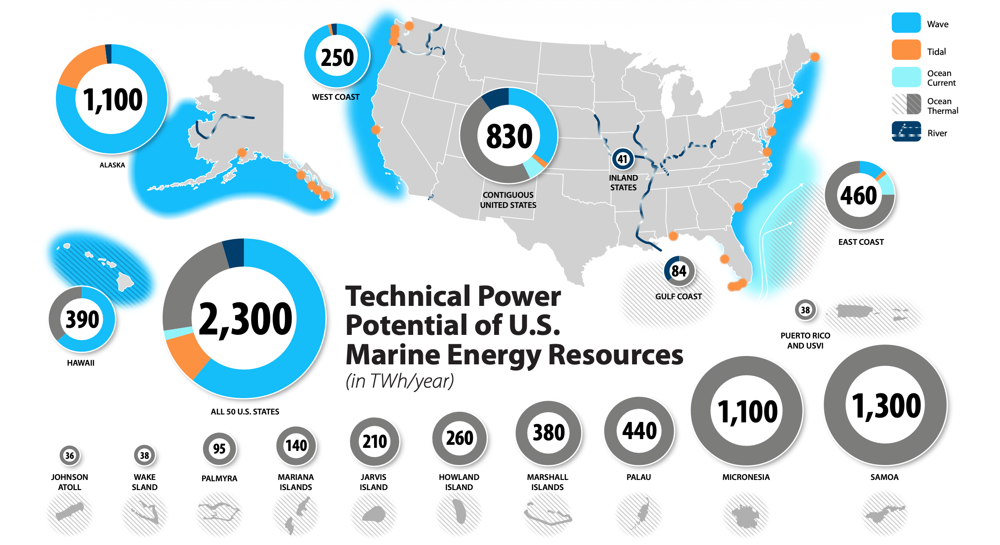
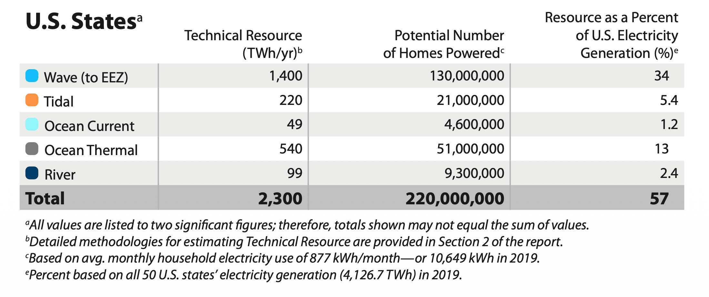

U.S. Marine Energy Resource¶
{kind=link}

Overview of U.S. Marine Energy Resources¶
Marine energy resources in the United States and its territories are distributed across offshore waters, coastlines, and rivers. Marine energy is in ocean waves, tidal currents, ocean currents, ocean thermal gradients, and river currents, and can be converted into usable electricity through technologies such as wave energy converters and tidal energy converters. Although marine energy development is at an early stage, the available technical resource is large and geographically widespread, with most of it still untapped. Understanding where these resources are located, how much energy they contain, and how they vary over time is therefore a foundational step for evaluating their future contribution to U.S. and territorial energy production [@general_kilcher2021_marine]. View Wave Resource on the Marine Energy Atlas
{kind=link}

- Wave energy resources are especially strong along the Pacific coastlines of California, Oregon, Washington, Alaska, and Hawaii [@general_kilcher2021_marine].
- Tidal energy resources could contribute substantially to electricity generation in Alaska, with additional significant potential in Washington and several Atlantic states [@general_kilcher2021_marine].
- Ocean thermal energy resources present major opportunities across Hawaii and U.S. Pacific and Caribbean territories, as well as portions of the Atlantic and Gulf coasts. U.S. Pacific and Caribbean territories and freely associated states contain an estimated additional 4,100 TWh/yr of technical ocean thermal energy resource potential [@general_kilcher2021_marine].
- Ocean current energy resources are concentrated primarily in the Gulf Stream system and could provide relatively steady power generation for portions of North Carolina, South Carolina, Georgia, and Florida [@general_kilcher2021_marine].
- River current energy resources can be harnessed without dams or river diversion structures and may provide distributed power generation opportunities throughout the United States [@general_kilcher2021_marine]. Explore Marine Energy Power Potential Estimates by Region
Even partial use of the available technical resource could contribute meaningfully to the national energy supply. Capturing one-tenth of the technically available marine energy resource across the 50 states would correspond to approximately 5.7% of current U.S. electricity generation, enough to power approximately 22 million homes, and would represent between 40 GW and 90 GW of installed generating capacity [@general_kilcher2021_marine]. Learn About Marine Energy Conversion Technology
Marine Energy Resource Data Products & Access¶
Marine energy resource data supports a wide range of applications spanning initial resource screening, site characterization, and multi-site optimization. The tools and datasets described here are designed for different user needs and technical backgrounds. Select the pathway below that best matches your use case.
{kind=link}
Reconnaissance Level Data Products
Investors | Policymakers | Regional Energy Planners | General Public
Reconnaissance level data products help users understand where marine energy resources are located within the United States and its territories .The Marine Energy Atlas maps the spatial distribution of wave, tidal, and other marine energy resources across U.S. waters. What you see are time-averaged summaries, wave layers averaged from 42 years of hindcast data, tidal layers from depth-averaged annual conditions. This reconnaissance-level view reveals where resources exist and their relative magnitude, providing a foundation for regional planning, policy conversations, and early investment screening. It is a starting point: site-specific development requires progressively detailed assessment beyond what these summaries capture.
{kind=link}
Site Feasibility Data Products
Marine Energy Developers | Marine Communities | Academic Research
What's at my site? Site Feasibility data products support answering this question by providing programmatic access to the underlying hindcast models at your coordinates of interest. Start with the Atlas to screen and refine your site, then pull time-series data through the pathways below.
Wave Energy
Access multi-decade WPTO Hindcast data using MHKiT, available for both Python and MATLAB. These tools enable resource characterization, sea state analysis, and preliminary energy calculations for your selected coordinates.
Tidal Energy
Download high-resolution tidal hindcast data using the us-marine-energy-resource Python library, then perform resource analysis with the MHKiT Tidal module. This workflow supports current velocity statistics, harmonic analysis, and power density calculations.
{kind=link}
Spatiotemporal Analysis Data Products
Large Scale Site Development | Optimization Studies | Machine Learning and AI
Optimizing across sites? Spatiotemporal Analysis data products support this by providing full temporal and spatial coverage of the hindcast datasets for rigorous technical analysis, covering device design, validation studies, and multi-site comparison. Both wave and tidal datasets are publicly available at no cost via OpenEI-hosted AWS S3 buckets. The MHKDR records serve as the authoritative data citations, linking to the datasets with formal versioning and provenance. Datasets are structured to support IEC 62600-101 [@iec_62600_101] and IEC 62600-201 [@iec_62600_201] requirements.
Wave Energy
The complete WPTO wave hindcast (~113.5 TB across 6 regions) is freely available via the OpenEI AWS S3 bucket (s3://wpto-pds-us-wave, no credentials required). Variable definitions and dataset documentation are maintained in this site. Use the MHKDR record as the authoritative citation when referencing this dataset.
Tidal Energy
The full high-resolution tidal hindcast (46.6 TB) is freely available via the OpenEI AWS S3 data lake (aws s3 ls --no-sign-request s3://marine-energy-data/us-tidal/). Variable definitions and dataset documentation are maintained in this site. Use the MHKDR record as the authoritative citation when referencing this dataset.